Covert Storage Channel Lab
Lab Goals
- Generate regular network traffic based on a distribution
- Generate covert storage traffic channel traffic with TCP flag manipulation
- Detect the presence of covert storage traffic in a netowrk
Prerequisites
- You will need basic command line knowledge to complete this lab. Codecademy has a great tutorial on this topic.
- To analyze the computer network traffic from this attack, we will use tool called Wireshark. Here is a quick video tutorial for this tool.
- Hping3 is a computer networking tool that you will use. You can read more about this tool here.
- Scapy is a versatile Python program that enables the user to send, sniff and dissect and forge network packets. The Scapy documentation is a great resource if you would like to learn more.
Part 1: Setting up the topology
- Create a new slice under your corresponding project.
- Click the "Add Resources" button located in the page of your newly created slice.
- Click the URL Option.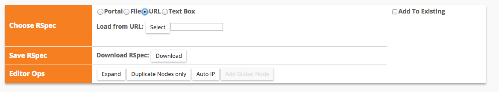
- Paste in the input box the following link: http://mountrouidoux.people.cofc.edu/CyberPaths/files/csc_lab_rspec.txt
- Once you have pasted the above link, click on the "Select" button.
- Your topology should now load and look similar to this:
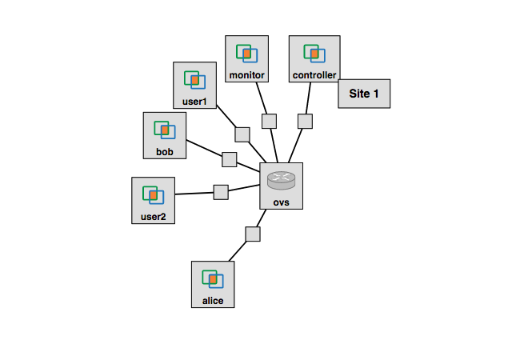
- Next, click on the box that says "Site 1" and select any available InstaGENI or ProtoGENI aggregate, and then reserve the resources.
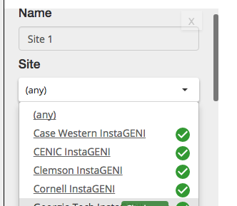
- Wait some time until all your resources are ready and available; you can check the status of these by going to the page of your slice. If the background color of a given node is grey, it means that such node is not ready and not available yet. If the background color of a given node is green, it means that such node is ready and available, just like below:
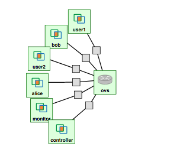
Part 2: Setting up your Nodes; Node: Controller
- With your topology resources reserved and ready, you may login to your nodes (for help on how to login to your nodes, please refer to one of the previous guides). Each node will require different preparations.
- The controller is just a regular machine. It needs to be set up in order for it to work as a controller for the virtual switch (OVS) in your topology. To set the controller up, connect through SSH to the controller node and execute the following commands:
- sudo git clone https://github.com/noxrepo/pox.git
- cd pox/ext
- sudo wget http://www.gpolab.bbn.com/experiment-support/NFVApps/pox-intro-ctrlapps.tar.gz
- sudo tar xvfz pox-intro-ctrlapps.tar.gz
- Having executed the above commands, the controller node now has the capability of operating as a controller to the virtual switch (OVS) of your topology.
Part 2: Setting up your Nodes; Node: OVS
- First, change the netmask so that all the interfaces belong to the same subnet. For each interface except for eth0, and the interface that connects the OVS to the Controller, run: "sudo ifconfig eth <OVSIP> netmask 255.255.0.0"
- Now you need to set-up the open virtual switch (OVS). Connect through SSH to the OVS node and execute the following command:
sudo ovs-vsctl add-br br0
- Next, you need to find which interface belongs to the controller. Execute the following command:
sudo ifconfig
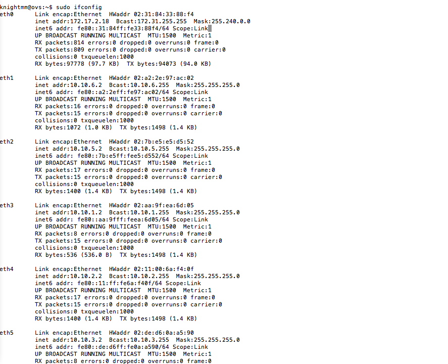
- You should see several interfaces listed after running the above command. Next, you will need to go to the GENI page for your slice and click on the grey link between the OVS and controller.
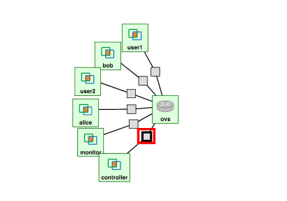
- On the left of the resource viewer you should see "Interface to OVS" and then see an IP address. Match this IP address with the corresponding interface that contains this IP address. This corresponding interface, eth1 in my case, is the interface of the controller.
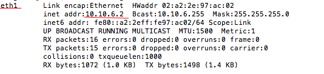 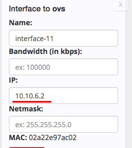
- Now execute the following command for every interface except eth0 and the interface for the controller (this command should be executed 5 times) on the OVS node:
sudo ovs-vsctl add-port br0 eth<Number>
- Next, connect through SSH to your controller node and note the IP address after executing the following command:
sudo ifconfig eth0
- Lastly, go back to your OVS terminal and execute the following commands replacing
<controller node IP address> with the IP address you noted from above:
sudo ovs-vsctl set-controller br0 ptcp:6634 tcp:<controller node IP address>:6633sudo ovs-vsctl set-fail-mode br0 secure
Part 2: Setting up your Nodes; Node: Alice
- Alice will function as the sender of the covert storage channel communication. We will upload an htcl file on the alice node in order to send covert storage channel communication using the tool hping3.
- Go to the terminal that corresponds to the "Alice" machine. Install hping3: "sudo apt-get install hping3"
- Using SFTP we will upload the given htcl file csc.htcl to the alice node
- If you are on a Mac/Linux machine SFTP into the Alice node and execute the following command(make sure you are in the same directory as the csc.htcl file when you sftp into the Alice node):
put csc.htcl
- If you are on a Mac/Linux machine and need more information on SFTP please refer to this guide
- For Windows machines you will use WinSPC to upload csc.htcl. A guide on where to install and how to use WinSPC can be found here
- In order for the alice node to send covert storage channel communication, we need to know the IP address of the bob node. This can be done by connecting through SSH to the Bob node and executing the following command:
sudo ifconfig eth1
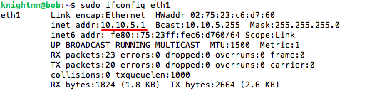
- Next, you will open the file csc.htcl that you just uploaded. Execute the command "
sudo nano csc.htcl" to open up the nano text editor. You will need to edit the following line "set target 10.10.5.1" (line 1) such that it reflects the IP address of your Bob node which you found above.
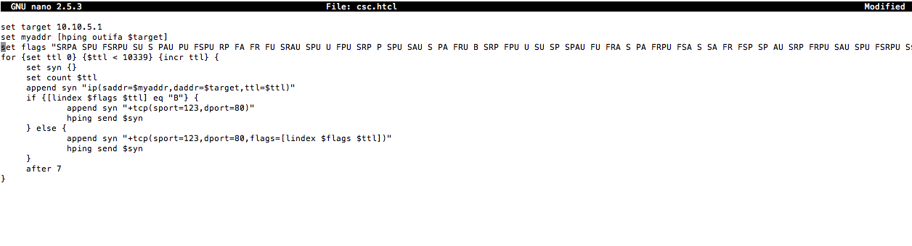
- Change the netmask so that all the nodes belong to the same subnet. Run: "sudo ifconfig eth1 <AliceIP> netmask 255.255.0.0"
- To save the file on the user1 node, simply do the following:
- press ctrl + x
- press y
- press enter
Part 2: Setting up your Nodes; Node: Bob
- Bob will function as the receiver of the covert storage channel communication. We will configure the bob node to play dumb to incoming TCP packets because the bob node is solely acting as the recipient of the covert storage channel communication and not as a sender or responder of covert storage channel communication.
- To make the bob node act in such a way, we need to know the IP address of the alice node. This can be done by connecting through SSH to the alice node and executing the following command:
sudo ifconfig eth1
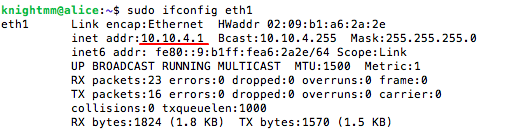
- Now that we know the IP address of the alice node, we need to connect through SSH to the bob node.
- After connecting to the bob node, execute the following command by replacing
<alice node IP address> with the IP address you noted from above: sudo iptables -A INPUT -t filter -s <alice node IP address> --protocol tcp -j REJECT
- Change the netmask so that all the nodes belong to the same subnet. Run: "sudo ifconfig eth1 <BobIP> netmask 255.255.0.0"
- The bob node is now configured not to reply to incoming TCP packets sent from the alice node.
- Why do you think we have disabled TCP packet replies from Bob to Alice?
Part 2: Setting up your Nodes; Node: User1
- User1 will function as a sender of regular traffic to the user2 node. We will upload an htcl file on the user1 node in order to simulate regular traffic using the tool hping3.
- Go to the terminal that corresponds to the "User1" machine. Install hping3: "sudo apt-get install hping3"
- Change the netmask so that all the nodes belong to the same subnet. Run: "sudo ifconfig eth1 <User1IP> netmask 255.255.0.0"
- Using SFTP we will upload the given htcl file regular1.htcl to the alice node
- If you are on a Mac/Linux machine SFTP into the Alice node and execute the following command(make sure youa re in the same directory as the regular1.htcl file when you sftp into the Alice node):
put regular.htcl
- If you are on a Mac/Linux machine and need more information on SFTP please refer to this guide
- For Windows machines you will use WinSPC to upload csc.htcl. A guide on where to install and how to use WinSPC can be found here
- In order for the user1 node to send the simulated regular traffic, we need to know the IP address of the user2 node. This can be done by connecting through SSH to the user2 node and executing the following command:
sudo ifconfig eth1
- Next, you will open the file regular1.htcl that you just uploaded. Execute the command "
sudo nano regular1.htcl"" to open up the nano text editor. You will need to edit the following line "set target 10.10.1.1" (line 1) such that it reflects the IP address of your user2 node which you found above.
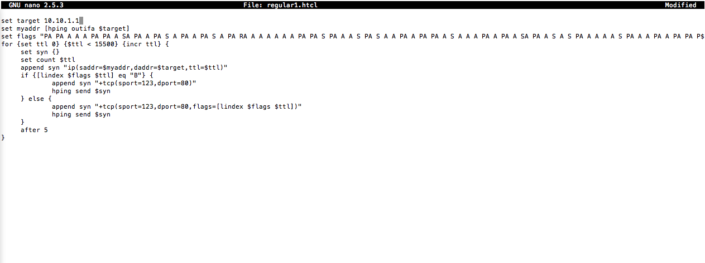
- To save the file on the user1 node, simply do the following:
- press ctrl + x
- press y
- press enter
Part 2: Setting up your Nodes; Node: User2
- User2 will function as the receiver of the regular communication. We will configure the User2 node to play dumb to incoming TCP packets because the bob node is solely acting as the recipient of the covert storage channel communication and not as a sender or responder of covert storage channel communication.
- Change the netmask so that all the nodes belong to the same subnet. Run: "sudo ifconfig eth1 <User2IP> netmask 255.255.0.0"
- To make the User2 node act in such a way, we need to know the IP address of the User1 node. This can be done by connecting through SSH to the User1 node and executing the following command:
sudo ifconfig eth1
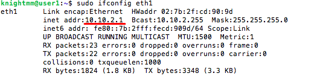
- Now that we know the IP address of the ouser1 node, we need to connect through SSH to the User2 node.
- After connecting to the User2 node, execute the following command by replacing
<User1 node IP address> with the IP address you noted from above: sudo iptables -A INPUT -t filter -s <User1 node IP address> --protocol tcp -j REJECT
- The User2 node is now configured not to reply to incoming TCP packets sent from the User1 node.
Part 2: Setting up your Nodes; Node: Monitor
- The Monitor is the collector of all traffic. By using SDN to duplicate all the traffic that goes through the switch, the monitor is an aggregator collecting pcap files that will be used to detect covert communication.
- Change the netmask so that all the nodes belong to the same subnet. Run: "sudo ifconfig eth1 <MonitorIP> netmask 255.255.0.0"
Part 3: Capturing Regular Traffic
- Now with all our nodes set up, we are going to generate and capture regular traffic being sent from the User1 to the User2 node. To capture the traffic we are going to use the flexibility of our SDN enabled switch and duplicate all traffic going through the switch to the Monitor node.
- SSH into the controller and execute the following commands:
cd ~/pox./pox.py --verbose DuplicateTraffic --duplicate_port=<Interface to Monitor on OVS>
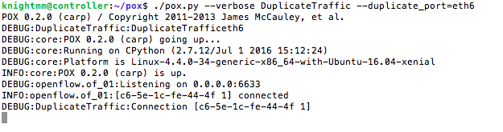
- The following commands tell the OVS switch to duplicate all the traffic to our monitor node.
- Now before we start sending regular traffic we want to capture all the traffic being duplicated to the monitor node into a pcap file for further analysis. Execute the following command in the monitor node
sudo tcpdump -i eth1 -w regularTraffic.pcap.
- Next in the User1 node execute the following command:
sudo hping3 exec regular1.htcl.
- After hping3 is finished executing, press ctrl+c on the monitor node to stop the capture. Now using sftp or WinSPC download regularTraffic.pcap from the monitor node.
Part 4: Createing a Distribution of Regular Traffic
- Now with the captured regular TCP traffic on your local machine, you will write a script that will create a distribution of regular tcp traffic
- The spets for creating a distribution could be as follows:
- Grab the tcp flag of every packet that has tcp header info
- Calculate the total number of times that each possible flag occurs
- Calculate the frequnecy of each flag(the total # flag occurs/ total # of packets)
- The final result should be a data structure that holds every possible TCP flag and their correlating frequncy
- A helpful tool is Scapy. A python library that allows you to easily read and parse pcap files. If you don't want to familiarize yourself with a new tool, you can export your pcap file to json, csv, etc. and use any programming languages/tools you already know.
Part 5: Capturing Mixed Traffic
- We are going to use the previously created distribution to detect covert traffic in a network, but first we need to create and capture such traffic.
- Similar to when we captured regular traffic previously, we need to have our POX controller telling the OVS switch to duplicate traffic to our Monitor node. On our Controller node execute the following command in the /pox/ directory:
./pox.py --verbose DuplicateTraffic --duplicate_port=<Interface to Monitor on OVS>.
- Now in our monitor node, we again will be using tcpdump to capture all the incoming traffic. Execute the following command:
sudo tcpdump -i eth1 -w mixedTraffic.pcap.
- In the User1 node execute the following command:
sudo hping3 exec regular1.htcl.
- In the Alice node execute the folowing command:
sudo hping3 exec csc.htcl.
- After both nodes are fnished sending traffic press ctrl+c on the monitor node to stop the capture. Now using sftp or WinSPC dowload mixedTraffic.pcap from the monitor node.
Understanding Covert Traffic
- CSC can be used for many purposes like issuing commands to a botnet or for data exfiltration like in our example. To understand how CSC can be used in data exfiltration, it is important to understand TCP flags. Within a packet, there is a specific six bit location that represents the 6 TCP flags. In order for TCP flags to be present in a packet, this six bit location would have certain bits or all of these six bits set or equal to 1 and not 0.
- For example, the below diagram shows that the bit location for the TCP ACK flag and TCP SYN flag are set (equal to 1) while the TCP URG flag, TCP PSH flag, TCP RST flag and TCP FIN flag are not set (equal to 0).
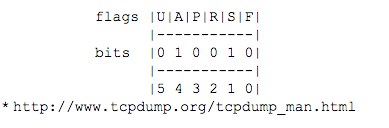
- In our example, the data we are exfiltrating are 140 character long passwords. A character is 8 bits. Thus, one password of 140 characters is exactly 1120 bits long. This means it would take about 187 packets to mask the 1120 bits of a single password inside the TCP flag bit fields of a packet.
- For example, say we have a two letter password that equals the bit representation of 0101000011110101. We would need to send three packets in order to exfiltrate this password.
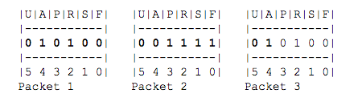
Part 6: Detecting Covert Traffic
- Now we will write a script to detect if there is covert traffic in a pcap file. To do this we are going to expand on the script we wrote earlier. We will be using a distribution of regular traffic and find the relative entropy compared to different packet intervals of the mixed traffic. If the relative entropy is greater than a certain threshold then we can say with confidence that there is covert traffic.
- Relative entropy or Kullback–Leibler divergence is the measure of information lost from one probability distribution to another. A great excerpt that clearly explains what KL divergence can be found here: http://web.engr.illinois.edu/~hanj/cs412/bk3/KL-divergence.pdf
- The steps for a script that uses a sliding packet window are as follows:
- Get a distribution of regular traffic using your previous script
- Populate the packet window with desired amount of packets
- Create a distribution of the packets using the same previous script
- Calculate the relative entropy of the packet window distribution compared to the regular traffic distribution
- If the relative entropy is greater than a certain threshold(i.e 1), raise an alert
- If not, slide the packet window over a packet and repeat the process of calulating the relative entropy until covert traffic is detected or the packet window can't slide over anymore